Сижу у Hausarzt. Первый раз. Готовился неделю.
Врач смотрит на меня и говорит: Atmen Sie tief ein.
Я киваю. Улыбаюсь. Не двигаюсь.
Потому что в голове я знал слово atmen. Дышать. А вот эту форму я не знал вообще.
Врач повторил. Медленнее. Я опять кивнул.
В третий раз он просто показал руками.
Дома открыл учебник. Оказалось, это Imperativ.
Повелительное наклонение. Тема A1.
Она стоит в самом начале любого учебника. Её проходят на третьей неделе курса.
И именно на ней ломаются, потому что её объясняют таблицей на две страницы.
Сейчас разберём без таблицы. За девять минут.
В русском одна форма на всех. «Открой» и «откройте» это почти одно и то же слово.
В немецком три разных формы. Выбор зависит не от вежливости, а от того, к кому вы обращаетесь.
Форму на «ты» не надо зубрить. Её можно собрать из того, что вы уже знаете. Возьмите обычное «ты делаешь» и отрежьте окончание. Нажмите на глагол.
Листайте страницу. Слово соберётся само
Не через инфинитив, а через форму «ты». Это принципиально.
Потому что у сильных глаголов внутри слова меняется гласная. И она меняется именно в форме «ты».
Если идти от инфинитива, вы эту смену потеряете и скажете неправильно.
Не надо помнить таблицу. Надо ответить себе на один вопрос: кому я это говорю.
Дальше идут исключения. Их немного, и все они логичные. Каждое правило это одна строчка и два примера.
Раньше −e добавляли ко всем глаголам подряд. Komme! Laufe!
Сейчас так не говорят, но в старых книгах и у пожилых людей вы это встретите. Не пугайтесь. Это то же самое слово.
Немецкий приказ звучит жёстче русского. Подвиньте регулятор и послушайте разницу.
Слева то, как говорят почти все, кто учил немецкий по таблицам. Справа то, как говорит немец.
Прочитать и понять это не то же самое, что вспомнить через час. Проверьте себя прямо сейчас.
Imperativ это одна тема из уровня A1. Их там около двадцати. Дальше A2, B1, B2, C1.
Вопрос не в том, сложный ли немецкий. Вопрос в том, где взять сорок таких разборов и силы их пройти.
Про это вторая половина страницы.
Мы прочитали больше тысячи комментариев под постами про немецкий. Половина из них это не про язык. Это про стыд.
А вот что пишут те, кого обвиняют:
Мозг после смены не запоминает новое. Ему нечем. Это не характер и не сила воли, это ресурс, которого нет.
Значит, надо не заставлять себя сильнее. Надо уменьшить порцию до той, которую усталый мозг всё-таки берёт.
Десять минут. Один гайд. Без расписания.
Курс требует полтора часа подряд. Синей полоски на это не хватит.
Десяти минут хватит.
Причины по частоте упоминаний в комментариях под нашими постами
Обратите внимание: слова «лень» в этом списке нет. Его называют только те, кто смотрит со стороны.
Всё, что вы читали выше, это один гайд с платформы. Внутри такие же по грамматике, лексике, ситуациям и произношению. От первого слова до C1.
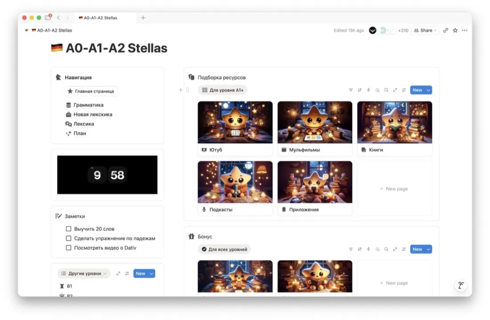
Главная страница уровня A0–A2. Навигация, заметки, подборки ресурсов
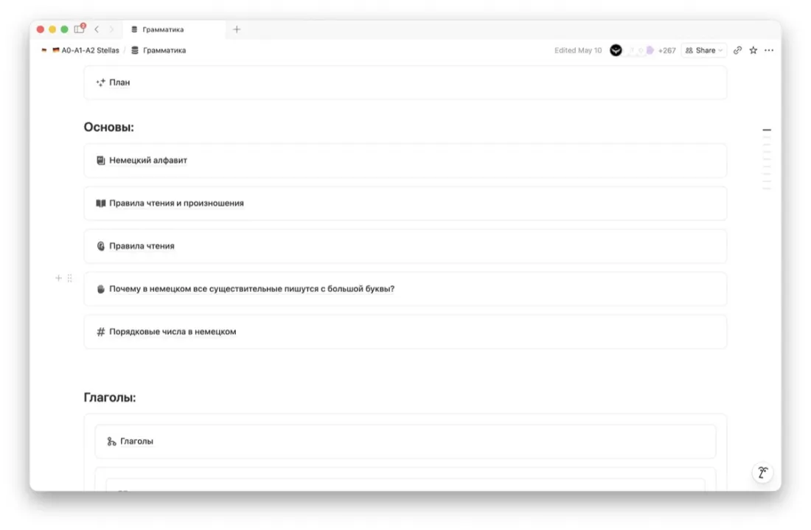
Гайды по грамматике
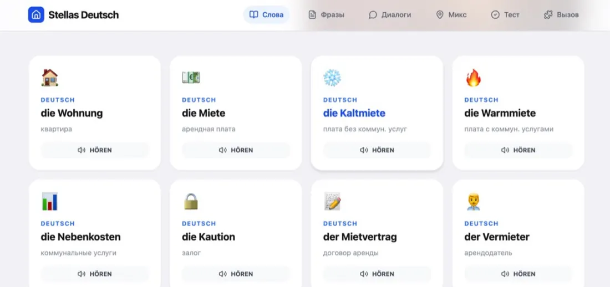
Слова с озвучкой
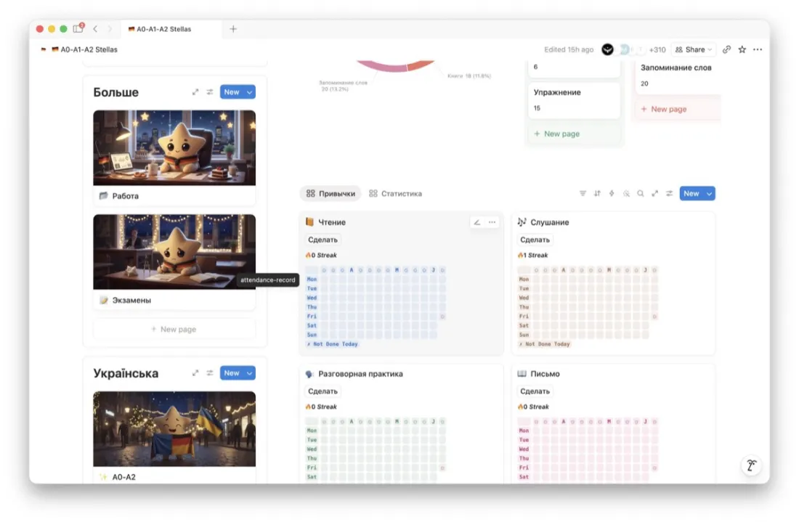
Трекер привычек и статистика
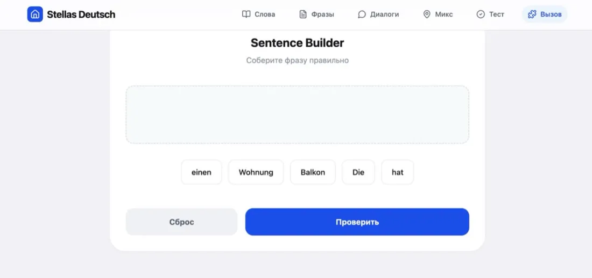
Конструктор предложений
Мы не будем рассказывать, как там всё удобно. Просто посмотрите сами. Оба видео без звука, можно листать дальше.
Раздел «Грамматика». Восьмая строка снизу это как раз «Повелительное наклонение», тот самый разбор, который вы читали выше
Симулятор диалогов Stellas. Проходите рабочий день на немецком и получаете обратную связь по каждой реплике
Уровень это абстракция. До неё далеко и она не мотивирует.
А вот «сходить к врачу и всё понять» это конкретно. И это можно закрыть за один вечер.
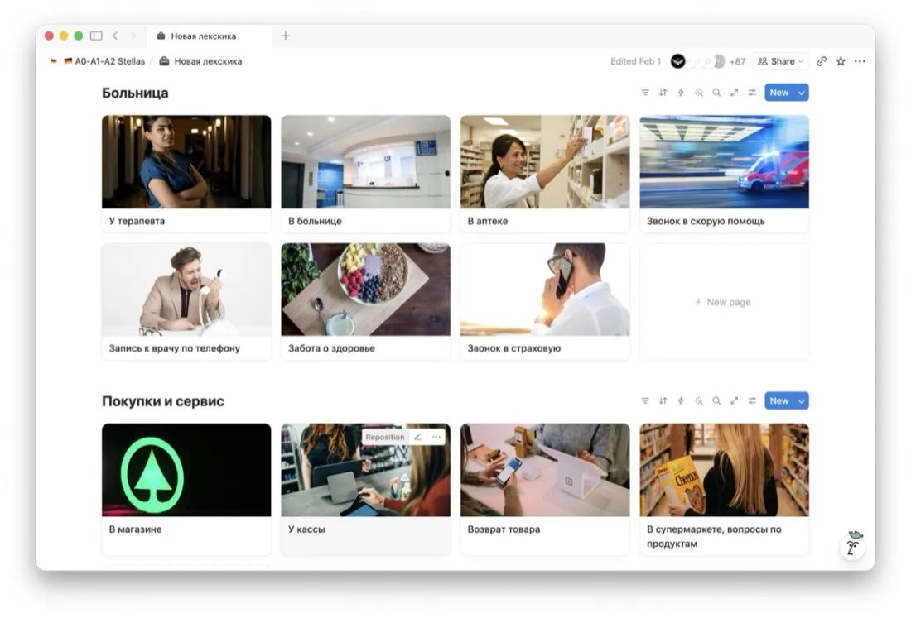
Раздел «Новая лексика». Каждая карточка это готовый набор фраз для одной ситуации
Нет уроков в 18:00. Нет группы, которая ушла вперёд. Нет чувства, что вы отстали.
Десять минут в метро это тоже занятие.
Платформа сделана в Notion. Скачиваете приложение на телефон или ноутбук, и всё содержимое доступно офлайн. В подвале склада, в поезде, в очереди в Amt.
В каждом гайде по грамматике есть разбор темы, видео и упражнение с ответами и объяснением. Не «посмотрите таблицу», а полный круг до проверки.
Чтение, слушание, разговор, письмо. Каждый закрытый день это квадратик. Через месяц вы видите не ощущение «топчусь на месте», а картинку того, что сделали.
Это не щедрость. Это снятое давление: когда доступ не сгорает, бросить страшно перестаёт быть дорого.
Две платформы закрывают всю шкалу. Ничего не придётся докупать по дороге.
Первые слова, база грамматики, бытовые ситуации
Работа, Ausbildung, экзамены, сложные конструкции
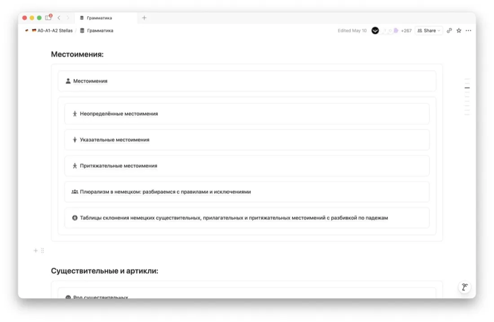
Так выглядит один гайд внутри. Тема, разбор, примеры, упражнение
Мы не переписывали и не приглаживали. Как прислали, так и выложили.
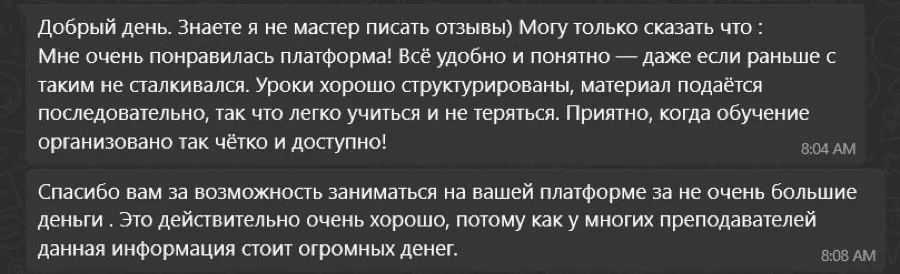
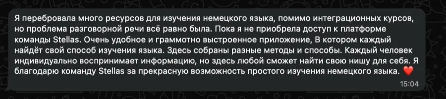
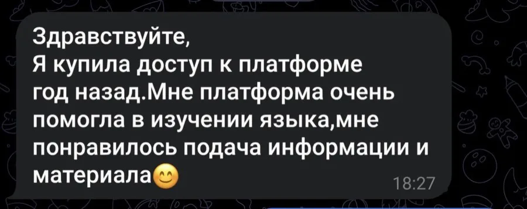
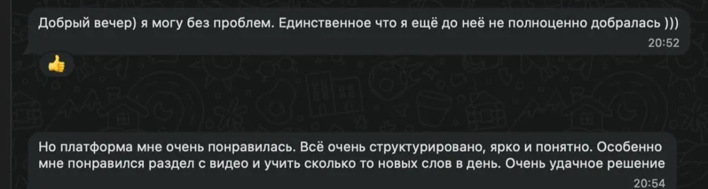
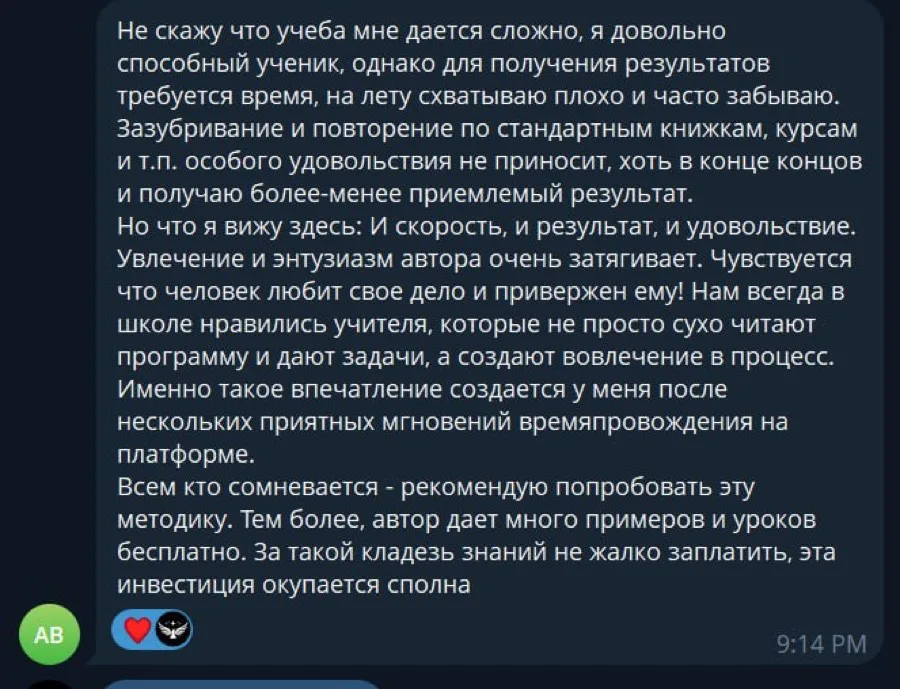
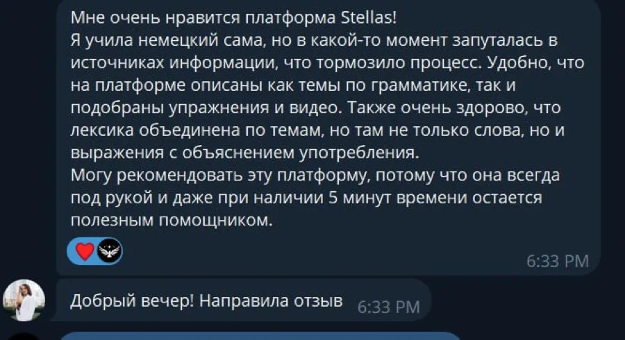
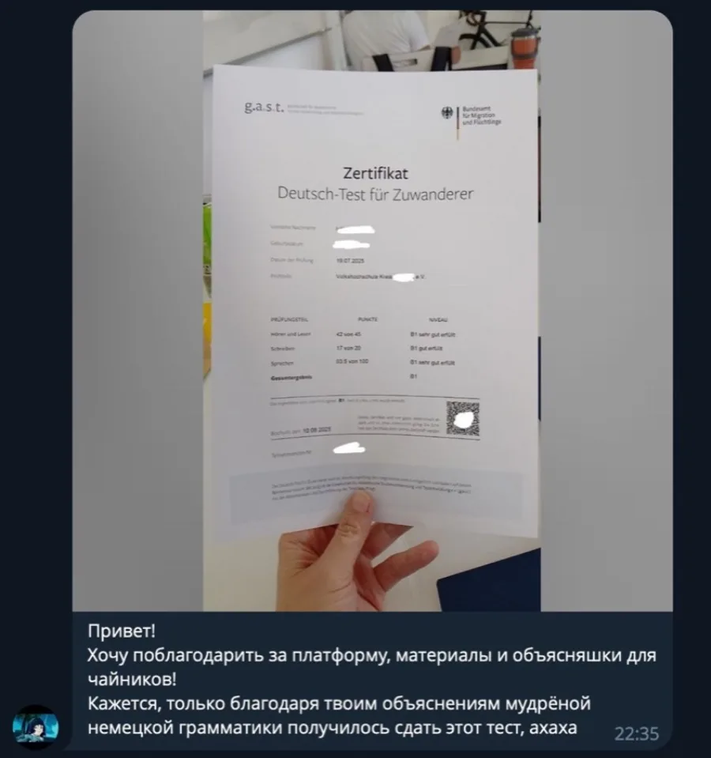
Если вы уже пробовали и не получилось, у вас есть право сомневаться. Мы не будем вас переубеждать. Просто скажем, как есть.
Не подписка. Не рассрочка. Не «первый месяц бесплатно, потом списываем».
Купили и пользуетесь.
Идёт в подарок. Для тех, кому объяснение на украинском заходит легче, чем на русском. Или для мамы, бабушки, ребёнка, которым так будет понятнее.
Две платформы по отдельности стоят 40 €.
Вместе 30 €.
Оплата один раз · доступ навсегда · подарок на украинском
И последнее. Немецкий не сделает вас умнее. Он не решит войну, не вернёт дом и не отменит усталость.
Он делает одну вещь. Убирает стену между вами и людьми вокруг.
Начните с одной фразы. Сегодня. Komm!